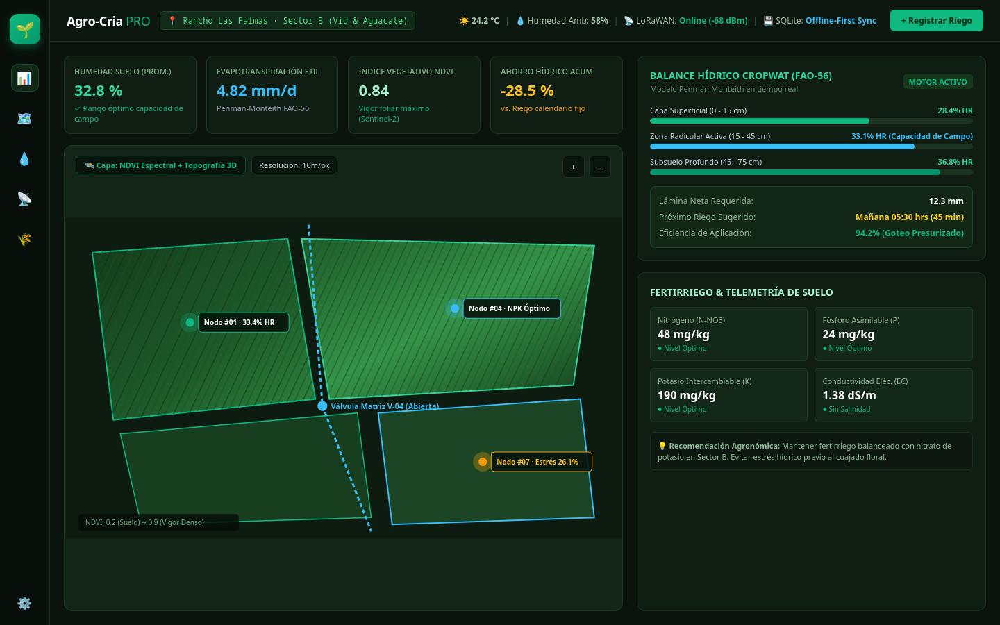
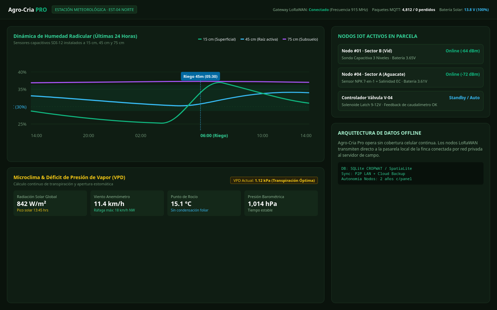

Plataforma integral de gestión agropecuaria con motor determinista de balance hídrico FAO-56/CROPWAT, ganadería y telemetría IoT.
Diseñado para adaptarse a grandes extensiones agrícolas, invernaderos tecnificados, hatos ganaderos y colecciones botánicas.
Cálculo determinista de evapotranspiración de cultivo (ETc = ET0 × Kc), agua total y fácilmente aprovechable (TAW/RAW) y prescripción volumétrica exacta de riego.
Estructura espacial jerárquica: ranchos, sectores, naves y bancales. Control de siembras, densidades, fenología, sustratos y fertilización N-P-K.
Control sanitario, aretes de identificación, pesaje dinámico, genealogía, calendario de vacunación y seguimiento estricto de periodos de retiro.
Monitoreo continuo de sondas de humedad de suelo a múltiples profundidades, temperatura ambiente, conductividad eléctrica (EC) y pH.
Identificación individualizada de especímenes botánicos, orquídeas, bonsáis y plantas madre con fichas de trazabilidad por código QR.
Modelos de asistencia inteligente para detección temprana de plagas, carencias nutricionales y recomendaciones automáticas de fertilización.
Capturas reales de Agro-Cria Pro en campo: telemetría continua por LoRaWAN, balance Penman-Monteith y mapas de vigor vegetal.

Supervisión espectral con delimitación de sectores, control de válvulas matrices de fertirriego y prescripción hídrica exacta calculada por Penman-Monteith.

Lectura continua de sensores capacitivos SDI-12 a 15, 45 y 75 cm, radiación solar global en W/m² y déficit de presión de vapor para evitar estrés estomático.
Agro-Cria Pro se sustenta sobre un modelo de datos relacional de 23 módulos especializados, validado para SQLite local y PostgreSQL empresarial:
Multiempresa, perfiles de suelo, fuentes de agua, sistemas de fertirriego computarizado, inventario de insumos, historial meteorológico y asignación de tareas operativas para cuadrillas de campo.
Desarrollado con Kotlin Multiplatform y Compose Multiplatform para un rendimiento nativo impecable en cualquier dispositivo.
Panel completo para estaciones de trabajo y cuartos de control. Instaladores nativos para Windows (.msi / .exe) y Linux (.deb / .rpm).
App táctil diseñada para operar a pie de parcela o dentro del establo, capturando lecturas, aretes y fotos fenológicas sin conexión.
Consolidación automática en tiempo real cuando el dispositivo recupera cobertura, garantizando que el equipo directivo siempre tenga datos actualizados.
Soluciones flexibles desde ranchos familiares hasta corporativos agroindustriales.
Ideal para ranchos, huertas y viveros independientes.
Hasta 3 usuarios y 2 zonas de cultivo
Para operaciones tecnificadas con riego y ganadería.
Usuarios y zonas ilimitadas
Instalación local permanente para centros de investigación o corporativos.
Infraestructura local o nube privada
Agenda una sesión de demostración técnica con nuestros especialistas en ingeniería de software y agronomía.
Comunícate por teléfono o correo para coordinar tu demostración: